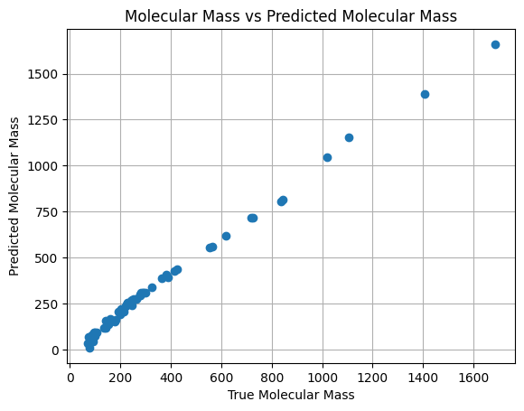

t0 = time.time()myMod=SymbolicRegressor(verbose=1)myMod.fit(X,y)y_pred=myMod.predict(X)print("time to fit: ",time.time() - t0, 'seconds')
/usr/local/lib/python3.11/dist-packages/sklearn/base.py:474: FutureWarning: `BaseEstimator._validate_data` is deprecated in 1.6 and will be removed in 1.7. Use `sklearn.utils.validation.validate_data` instead. This function becomes public and is part of the scikit-learn developer API.
warnings.warn(
time to fit: 5.023283004760742 seconds
/usr/local/lib/python3.11/dist-packages/sklearn/base.py:474: FutureWarning: `BaseEstimator._validate_data` is deprecated in 1.6 and will be removed in 1.7. Use `sklearn.utils.validation.validate_data` instead. This function becomes public and is part of the scikit-learn developer API.
warnings.warn(
Results
Let’s take a peek at how the predicted molecular mass looks compared to the actual:
plt.plot(y,y_pred,marker="o",linestyle="None")plt.xlabel('True Molecular Mass')plt.ylabel('Predicted Molecular Mass')plt.title('Molecular Mass vs Predicted Molecular Mass')plt.grid()plt.show()

As the correlation looks reasonable, let us take a look at the equation:
def get_eq(X : pd.DataFrame, expr : str): model_str =str(sym.parse_expr(expr)) mapping = {'x'+str(i+1): k for i, k inenumerate(X.columns)} new_model = model_strfor k, v inreversed(mapping.items()): new_model = new_model.replace(k, v)return new_model# Create a dummy DataFrame from the x variable for the function callx_df = pd.DataFrame(X, columns=['x'])myEq=get_eq(x_df, myMod.sexpr_)print(myEq)
/usr/local/lib/python3.11/dist-packages/sklearn/base.py:474: FutureWarning: `BaseEstimator._validate_data` is deprecated in 1.6 and will be removed in 1.7. Use `sklearn.utils.validation.validate_data` instead. This function becomes public and is part of the scikit-learn developer API.
warnings.warn(
# New Correlation Tabledfh['Fit_Mw']=y_hossdfh.corr()